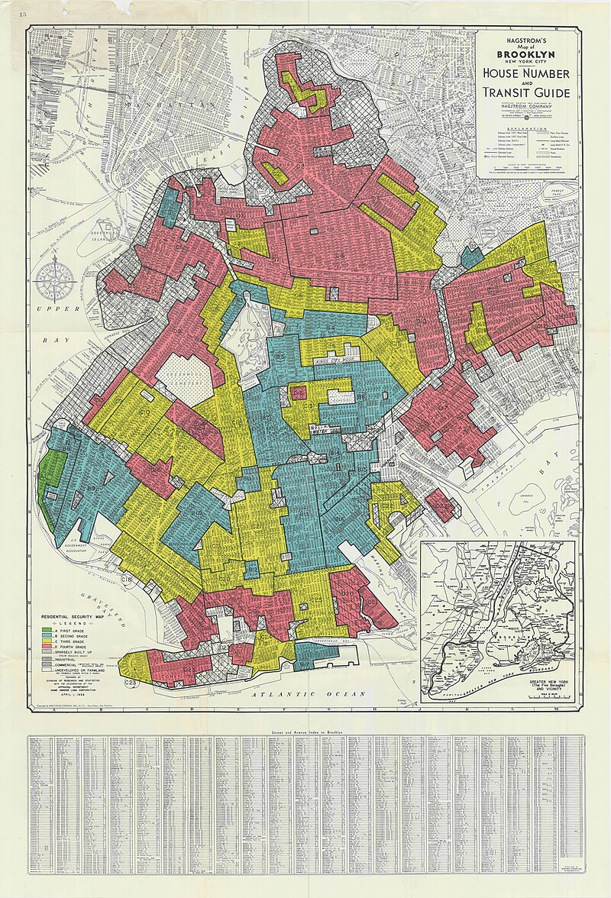
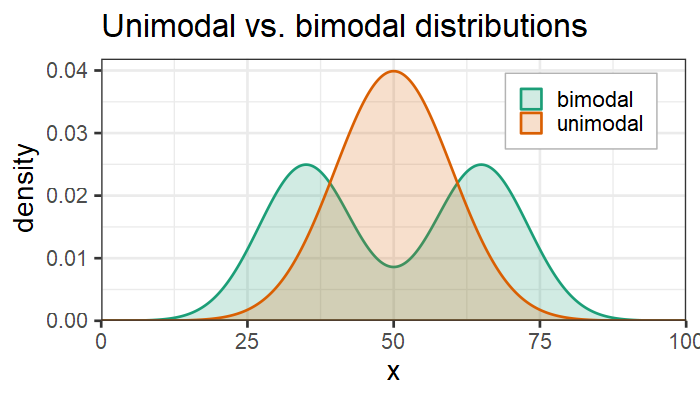

EES 4760/5760
Agent-Based and Individual-Based Computational Modeling
J. Magnolia Gilligan
Class #24: Thursday, November 19, 2026

HOLC red-lining map of Brooklyn NY, 1938. Public Domain
HOLC red-lining map of Brooklyn NY, 1938. Public Domain
Maybe the first Agent-Based Model.
No computers. Schelling worked the model on graph paper with pennies and dimes representing the two kinds of agents.
Schelling new about the three causes and thought organized action and socioeconomic filters were the most important causes of segregation …
happy? (true or
false)%-similar-wanted and a
turtle is happy? if at least this fraction of its neighbors
have the same color as its own.happy?, the model stops.Vary %-similar-wanted and the density of
turtles on the patches.
density and %-similar-wanted to
different combinations near maximum, minimum, and in the middle.density to 75% and set
%-similar-wanted to 95%setup and then press go
go still pushed, slowly reduce
%-similar-wanted.
%-similar-wanted
time limit to 1000density to 75percent-similar
%-similar-wanted and
density
Add the following to the procedure
to update-turtles, after set happy?
ifelse happy? [ set shape "square" ] [ set shape "square-x" ]Repeat the exercise of:
density = 75% and %-similar-wanted =
95%,setup and go
%-similar-wanted
Is it easier to see the emerging patterns now?
%-similar-wanted = 75%),density).density to 75% and
%-similar-wanted to 75%.
density
density to 96% and
%-similar-wanted to 75%.
%-similar-wanted
%-similar-wanted to 70%.Are they unimodal or multimodal?
